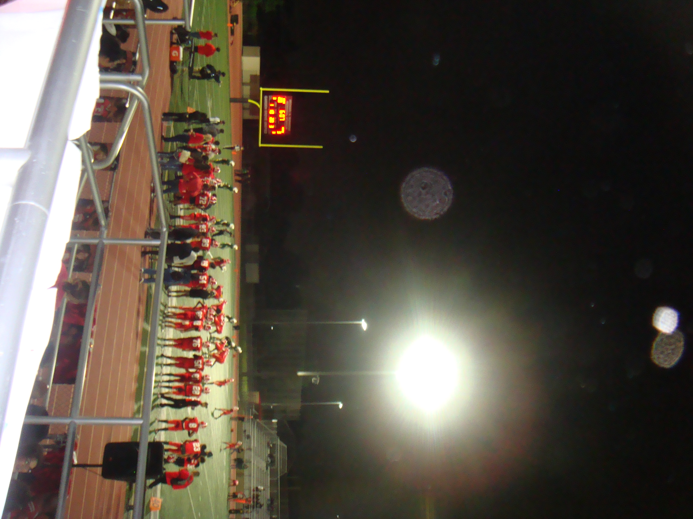
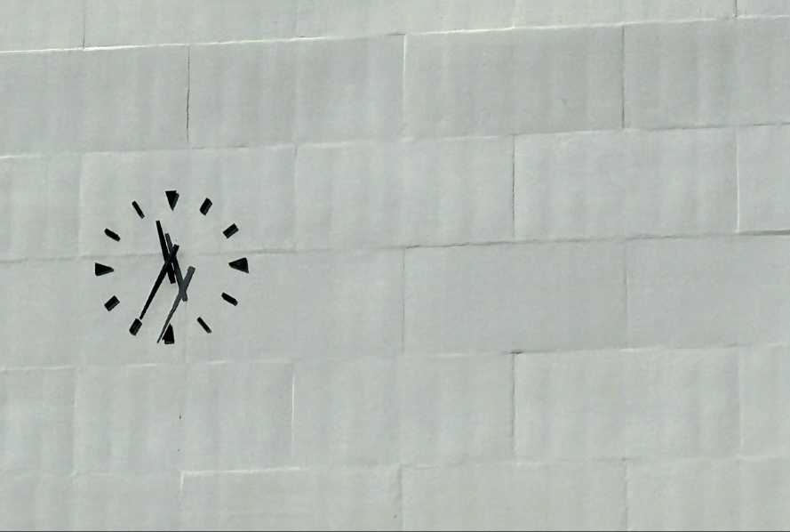
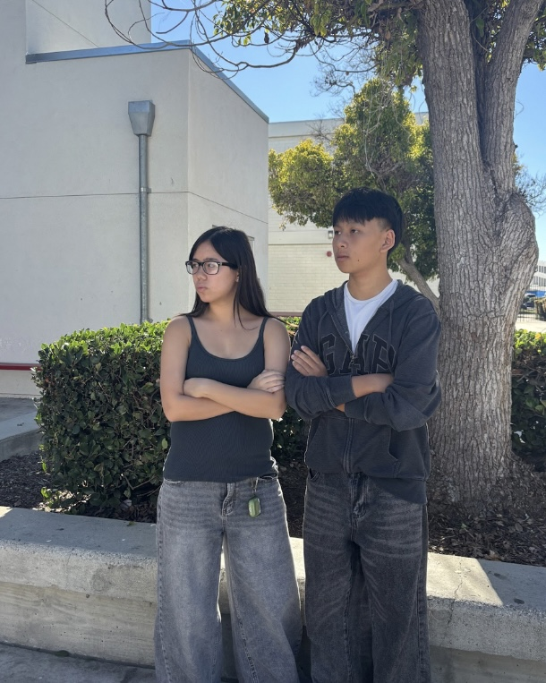
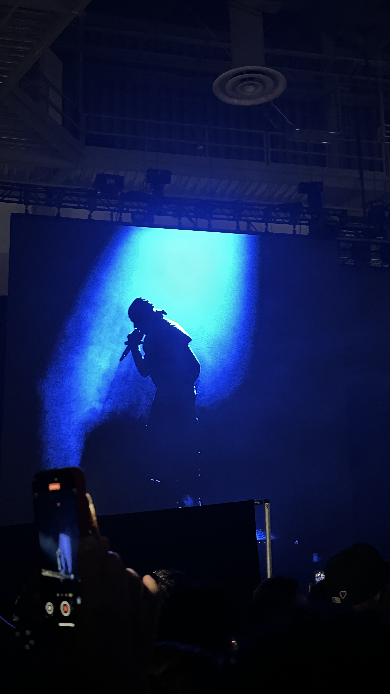
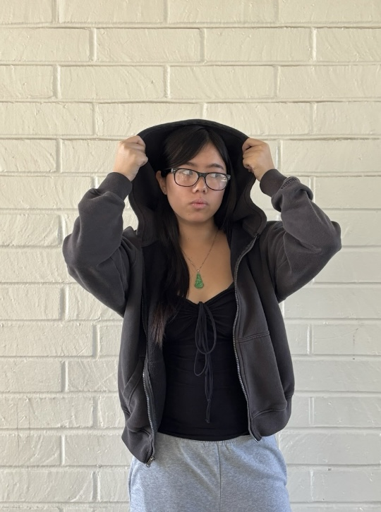
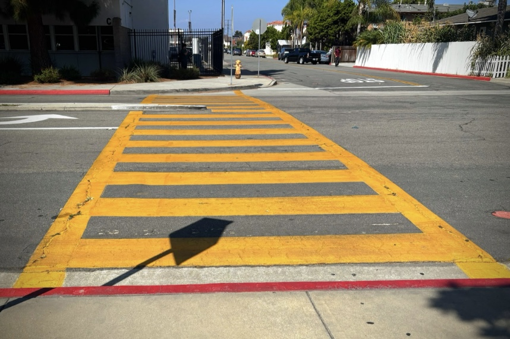

Golden
Hour
Exploring natural light at its most dramatic.

Exploring natural light at its most dramatic.

Cinematic captures of the modern city landscape.

Composition through layers of atmosphere.

Minimalism found in open spaces.

Verticality in brutalist architecture.

Shadow and light in the midnight hours.

Freezing time within the chaos of the crowd.

A wide look at the meeting of tide and shore.